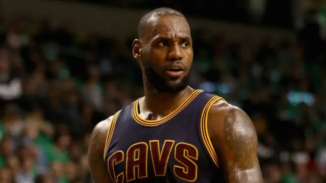
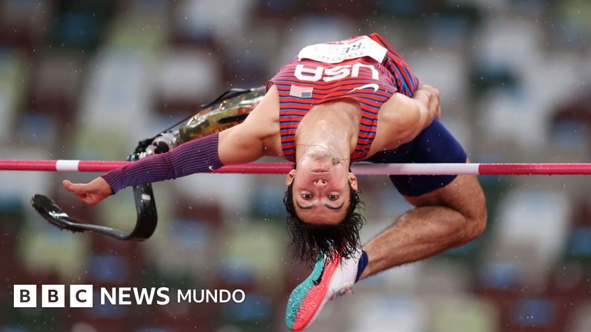

Sean Bienvenidos a la mejor pagina de informacion deportiva
Secciòn de futbol
Cristiano Ronaldo con la Juventus: así fue la locura que desató en Italia el debut del portugués en un partido que contó con más aficionados que población

El primer partido de Cristiano Ronaldo con la Juventus tuvo todos los elementos para quedar guardado en la memoria de los más de 5.000 aficionados que abarrotaron el estadio de la pequeña población de Villar Perosa, de solo 4.000 habitantes. Más de un dólar por segundo para Cristiano Ronaldo: los extraordinarios números que explican su traspaso del Real Madrid a la Juventus de Turín En el tradicional encuentro que sube el telón de la temporada de la "Vieja Señora" del fútbol italiano, un amistoso contra la Juventus B, el cinco veces ganador del Balón de Oro anotó su primer gol con la camiseta bianconera antes de cumplirse el minuto ocho del partido y dio una asistencia en la cómoda victoria 5-0 a favor del primer equipo.
Secciòn de Atletismo
Bracy-Williams: 45 meses de sanción por dopaje en un caso que arrancó con un 'chivatazo'

Marvin Bracy-Williams, plata en los 100 metros del Mundial de atletismo de 2022, aceptó una sanción de 45 meses por violar las normas antidopaje. Según anunció la Agencia Antidopaje de Estados Unidos (USADA) en un comunicado, tras recibir una denuncia sobre el velocista, que califica de fidedigna a principios de 2024, inició una investigación que incluyó la toma de una muestra de orina fuera de competición a Bracy-Williams. Como resultado de dicha prueba, dio positivo por un agente anabólico y fue suspendido provisionalmente el 5 de febrero de 2024. Durante la investigación, que la USADA llevó a cabo junto con la Unidad de Integridad del Atletismo (AIU) y la División de Campo de Miami de la Oficina del Distrito de Orlando de la DEA, se descubrió que Bracy-Williams había intentado inicialmente manipular la investigación. Poco después de este intento adulteración, Bracy-Williams admitió sus infracciones y prestó una colaboración sustancial. El resultado positivo en la prueba y la tentavia de alteración se consideran una sola infracción según el Código Mundial Antidopaje, dado que la manipulación se produjo en relación con el uso de testosterona por parte de Bracy-Williams, semifinalista en los 100 metros en los Juegos Olímpicos de Río 2016. "Es fundamental que quienes participan en el deporte confíen en que las autoridades antidopaje los respaldarán y actuarán en función de la información para proteger la integridad del deporte y los derechos de los deportistas limpios, como se hizo en este caso”, afirmóTravis T. Tygart, director ejecutivo de la USADA. Esta investigación ya ha arrojado varios resultados importantes que se anunciarán más adelante Travis T. Tygart, director ejecutivo de la USADA Con la investigación estaba en marcha, Bracy-Williams cometió una nueva infracción de las normas antidopaje al acumular su tercera falta por incumplimiento de las normas de localización en un periodo de 12 meses. El también subcampeón mundial en el 4x100 de Eugene 2022 no fue localizado ni el 10 de agosto de 2023, ni el 4 de octubre de 2023 ni el 4 de junio de 2024. Esta sanción adicional de 24 meses se sumó a la de 21 meses impuesta anteriormente a Bracy-Williams (se le había asignado la reducción de un año al período de inelegibilidad que le correspondía al admitir la infracción y acepta la sanción propuesta). De este modo, se oficializó una suspensión total de 45 meses que comenzó el 5 de febrero de 2024. Además, se han anulado todos sus resultados deportivos desde el 1 de junio de 2023. Este caso no parece que se vaya a quedar sólo en la sanción a Bracy-Williams. La USADA, sin entrar en detalles, advierte que pronto se darán a conocer más detalles de una investigación que sigue su curso. "Cuando las normas se aplican correctamente, podemos exigir responsabilidades a los culpables y, al mismo tiempo, perseguir otras infracciones de las normas antidopaje y presentar cargos penales. Esta investigación ya ha arrojado varios resultados importantes que se anunciarán más adelante, conforme avance la investigación”, añadió Tygart.
Secciòn de Baloncesto
Lebron James habla sobre su nuevo rol en Lakers
Lebron James habla sobre su nuevo rol en Lakers-. La temporada 2025-26 de la NBA es la 23° de la carrera profesional de LeBron James y aún hay mucha incertidumbre sobre la continuidad o el inminente retiro del alero de Los Ángeles Lakers. El oriundo de Akron, Ohio, es el primer jugador en la historia de la liga estadounidense en llegar a esa cantidad de campañas y ejerció su opción de jugador por poco más de 52.5 millones de dólares en esta zafra con Lakers, pero no se sabe si planea renovar con los angelinos o tomar un nuevo rumbo. Además de esto, ‘King James’ no pudo estar desde el primer partido de esta temporada por molestias físicas en la ciática, pero regresó luego de 14 encuentros y tuvo que ponerse a tono rápido para entrar en la dinámica de un conjunto de Los Ángeles, que si bien se mantiene en gran medida, su rol dentro del esquema de juego del coach JJ Redick ya tiene un nuevo pilar en Luka Doncic, quien es considerado como el futuro de la franquicia de Lakers.En sus más recientes declaraciones en su show ‘Mind The Game’, LeBron James dejó claro que su misión es conseguir un nuevo campeonato y que puede adaptarse a lo que sea que necesite Los Ángeles. «Lo único que me importa es ganar. Lo he hecho todo en mi carrera, incluso ganar. Quiero seguir así, así que encajaré perfectamente en cualquier puesto que el equipo necesite», aseguró ‘King James’.
Secciòn de Salto Alto Con Garrocha
JENNIFER ELIZAROV, ORO Y RÉCORD PARA CANADÁ EN EL SALTO CON Garrocha
En una jornada histórica para el atletismo, Canadá celebró por partida doble en el salto con pértiga femenino de los II Juegos Panamericanos Junior Asu 2025. Jennifer Elizarov se consagró campeona panamericana al superar la vara en 4,45 metros, estableciendo un nuevo récord de la competencia y entregándole a su país una medalla dorada que quedará grabada en la memoria del equipo nacional. Elizarov no solo se llevó la victoria, sino que también destacó la calidad de sus rivales y el ambiente vivido durante la competencia. “Fue increíble competir con estas chicas maravillosas, ellas son increíbles también. Conocí a las chicas a lo largo de estos días, me siento agradecida de haber hecho amigas aquí. Es muy especial para mí ya que es la medalla dorada del Team Canada”, expresó con emoción tras recibir su presea. La campeona subrayó la importancia del respaldo recibido en su carrera, dedicando el triunfo a quienes siempre la acompañaron. “Agradezco cada segundo a mis padres y a mis entrenadores que hicieron posible esto. Falta para los siguientes panamericanos, pero estoy emocionada por todas las oportunidades que vendrán”, agregó con una sonrisa. El dominio canadiense fue total en la prueba, ya que la medalla de plata quedó también en manos del país norteamericano gracias a Heather Abadie, quien logró un registro de 4,00 metros. Por su parte, el bronce viajó a Brasil de la mano de Luana De Moura, que alcanzó los 3,90 metros y completó un podio que reflejó el alto nivel técnico de la competencia. Con esta actuación, Canadá reafirma su supremacía en el salto con pértiga femenino y proyecta un futuro alentador rumbo a los próximos desafíos internacionales.
leer màsSiganos en facebook , twiter , y nuestro canal de youtube